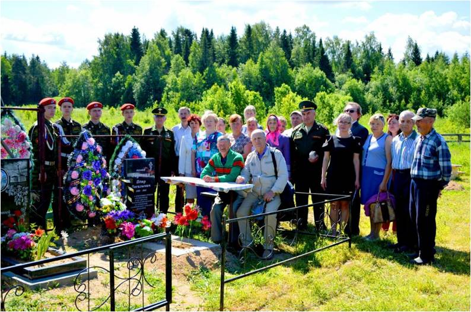

«Вахта памяти»
На полях сражений Великой Отечественной войны до сих пор лежат сотни тысяч советских солдат. В архиве напротив их имен короткая строчка – пропал без вести, а родные ничего не знают об их судьбе. «Поисковое движение России». Это крупнейшая в нашей стране организация, занимающейся полевой и архивной поисковой работой. В рамках акции «Вахта памяти» участники поисковых групп выезжают на те места, где проходили битвы времён Второй мировой войны, чтобы разыскать останки солдат, которые погибли на поле боя.
Поисковое движение стало ярким, поистине уникальным явлением в общественной жизни нашей страны - такую оценку президент России Владимир Путин дал в обращении к участникам открывшейся юбилейной "Вахты Памяти". По словам главы государства, эта общественная деятельность своей благородной миссией сплотила "десятки тысяч неравнодушных людей - тех, кто искренне любит Родину, чувствует личную ответственность за сбережение памяти о ратной летописи Отечества". Ежегодно в канун годовщины начала Великой Отечественной войны в центре Москвы у Вечного огня в Александровском саду проводится открытая патриотическая акция «Вахта памяти. Вечный огонь». За шесть лет работы Движения, его участниками были найдены останки более 120 000 советских солдат и офицеров, установлены более 6000 имен и судеб защитников Отечества.
Памятник «Могила Неизвестного солдата», г. Москва
Из Кичменгско-Городецкого района по итогам экспедиций усилиями поисковиков подняты и подготовлены к
погребению останки четверых воинов:
- Рыбина Ивана Дмитриевича, 1911г.р., захоронение 21.04.2012 г., д. Павлово
- Казакова Евграфа Ивановича, 1901г.р., захоронение 31.05.2018г., с Кичменгский Городок
- Зауткина Петра Васильевича, 1898г.р., захоронение 20.10.2018, с. Косково
- Протасова Якова Григорьевича, 1916 г.р., захоронение 22.08.2020, с. Косково
Они отдали свою жизнь, защищая Родину. Упокоивая останки воина, мы выполняем свой христианский долг перед ушедшими поколениями героев во имя воспитания и нравственного становления детей и молодежи, кто в будущем будет хранить память и благодарность за дар свободы и независимости.
Могила Зауткина П.В., захоронение 20.10.2018
«Горсть памяти»
В День памяти и скорби 22 июня 2019 в рамках подготовки к празднованию 75-й годовщины победы в Великой Отечественной войне Министерство обороны РФ провело Всероссийскую военно-патриотическую акцию "Горсть памяти". В этот день в 12 часов по местному времени во всех субъектах России состоялся торжественный ритуал забора земли с мест братских захоронений. "В дальнейшем их поместят в гильзы артиллерийских снарядов и установят на прихрамовой территории главного храма Вооруженных сил РФ - в историко-мемориальном комплексе "Дорога памяти". 22 июня забор земли осуществили с мест воинских захоронений с. Косково, с. Кичменгский Городок, д. Павлово, где захоронены наши воины, найденные поисковиками.
22 июня 2019, с. Косково
«Главный храм Вооруженных сил России — новая страница истории Отечества и Русского Оружия»
В России испокон веков возводились храмы в память о своих защитниках. Храм построен в честь Воскресения Христова, посвящен 75-летию Победы в Великой Отечественной войне, а также ратным подвигам русского народа во всех войнах, выпавших на долю нашей страны. Возвели его на территории парка «Патриот» в рекордные сроки – 1,5 года.
Храм спроектирован в монументальном русском стиле, органично включающем современные архитектурные подходы и уникальные для православного храмоздательства нововведения. Фасады здания отделаны металлом, своды — остеклены. 96,2 м - высота Храма вместе с крестом.
Храм Вооруженных сил РФ
МУЗЕЙ «ДОРОГА ПАМЯТИ» ОПОЯСЫВАЕТ ГЛАВНЫЙ ХРАМ ВООРУЖЕННЫХ СИЛ РОССИИ
Галерея протяженностью в 1418 шагов. В галерее рассказана подробная история каждого дня Великой Отечественной войны, создана максимально достоверная атмосфера событий 1941-1945 годов. Здесь можно пережить путь от трагических событий начала войны, до триумфального входа Советской армии в Берлин.
Музей «Дорога памяти» высокотехнологичный. Он погружает в обстановку значительных этапов войны - Оборона Брестской крепости, Оборона Москвы, Оборона Сталинграда, Ледяная Дорога Жизни к блокадному Ленинграду и т.п. Всего в музее 35 залов, 27 из которых, иммерсивыные с эффектом погружения
ГАЛЕРЕЯ ПАМЯТИ — ФОТОПАННО ИЗ ФОТОГРАФИЙ УЧАСТНИКОВ ВОЙНЫ
Музей хранит информацию о 33 млн. участниках войны. Каждый может найти своего родственника, сражавшегося за Родину. Если его данных или фотографии в базе еще нет, то экскурсовод расскажет, как их туда добавить.
Так, шаг за шагом, из зала в зал, вы пройдете свои 1418 шагов к Победе. На выходе из галереи можно оставить свои отзывы в специальной книге гостей. Особая часть музея - 174 комплекса-депозитария с 15 000 гильзами. В них земля, привезенная с мест захоронения воинов из 44 стран мира. Комплексы расположены вдоль всей галереи музея.
С. ОРЛОВ
Самые отважные солдаты
Были те, что не пришли домой,
В день Победы, в мае, в сорок пятом,
Став навеки Родиной самой.
Как редело наше поколение –
Звездам в небе гаснувшим сродни –
Знают только русские селения,
Города да матери одни.
Как в жару в степи мелеют реки,
И сады сгорают в тишине,
Лучшие друзья у нас навеки
В юности остались, на войне.
… А года без них все длятся, длятся.
Ах как в мире холодно без них!
Цепь порвалась. Павшим не подняться,
Чтобы на земле согреть живых.
Только плещет пламя под гранитом.
Нерушима кладбищ тишина.
Кто забыт – не знаем. Что забыто?
Ничего не скажут имена…